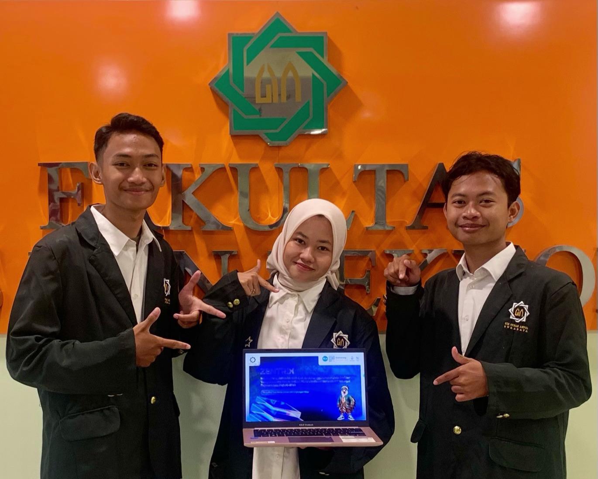

Suhu Cairan
28,5°C
Kondisi Optimal
Pemantauan langsung parameter suhu, keasaman (pH), dan waktu proses pengolahan limbah cair.
Status Reaktor Saat Ini
Proses Berjalan
Suhu Cairan
28,5°C
Kondisi Optimal
Derajat Keasaman (pH)
6,8
Kondisi Netral
Lama Pengolahan
18jam
Siklus Berjalan
Status Pompa Air
Sirkulasi ON
Otomatis Aktif
Estimasi waktu tersisa: 18 Jam 00 Menit
Pompa Sirkulasi Aktif
Hari ini, 13:45 WIB
Penyesuaian pH Stabil
Hari ini, 12:30 WIB
Siklus Baru Dimulai
Kemarin, 20:00 WIB
Tinjau rekapitulasi data sensor (Suhu, pH, Waktu) dan catat data tambahan ke Spreadsheets terintegrasi.
| Waktu (WIB) | Suhu Air (°C) | Keasaman (pH) | Durasi Tahap | Status Sistem |
|---|---|---|---|---|
| Hari ini, 08:00 | 28.5 | 6.8 | 18 Jam | Berjalan |
| Kemarin, 20:00 | 28.3 | 6.5 | 6 Jam | Berjalan |
| Kemarin, 14:00 | 28.0 | 6.2 | 0 Jam (Mulai) | Siklus Baru |
Tambahkan catatan observasi manual di luar data sensor otomatis (misal: warna air, bau, dll).
Analisis mendalam tren data dari sensor Suhu (DS18B20) dan Keasaman (pH) selama siklus pengolahan.
Sensor DS18B20 (5 Hari Terakhir)
Siklus Keasaman (Inlet - Outlet)
Kandungan organik tinggi (Darah, lemak)
Penguraian oleh mikroorganisme stabil
Air netral & aman dialirkan ke lingkungan
Daftar perangkat keras dan sensor yang terhubung. Klik "Lihat Detail" untuk spesifikasi teknis.
Mikrokontroler & Modul Wi-Fi Client
Spesifikasi: Dual-Core Tensilica Xtensa 32-bit (240MHz), terintegrasi Wi-Fi 802.11 b/g/n & Bluetooth v4.2 BLE.
Fungsi Reaktor: Sebagai otak sistem yang memproses data dari sensor pH dan suhu, serta mem-publish data ke MQTT Broker.
Probe Suhu Digital Waterproof
Spesifikasi: Protokol antarmuka 1-Wire, Rentang ukur operasional -55°C hingga +125°C dengan tingkat presisi akurasi ±0.5°C.
Fungsi Reaktor: Dicelupkan ke dalam reaktor untuk memonitor suhu agar mikroba biofilter beraktivitas pada rentang termal ideal (25-35°C).
Modul Pengukuran Tingkat Keasaman
Spesifikasi: Probe elektroda kaca industri, rentang pH 0.0 hingga 14.0. Output tegangan analog terhubung ke pin ADC ESP32.
Fungsi Reaktor: Memantau perubahan pH dari air limbah yang berpotensi mematikan bakteri biofilter maupun tanaman fitoremediasi.
Pencatat Durasi / Waktu Retensi
Spesifikasi: Real-Time Clock dengan osilator kompensasi suhu (TCXO). Komunikasi antarmuka I2C, dengan baterai cadangan CR2032.
Fungsi Reaktor: Menjaga presisi perhitungan waktu (18 jam) agar pompa sirkulasi beroperasi tepat waktu meskipun koneksi internet terputus.
Laporan peringatan sistem sensor dan aktivitas pompa.
Kalibrasi Sensor pH Disarankan
Sistem mendeteksi deviasi pembacaan kecil di bak influen.
Siklus 18 Jam Selesai
Waktu retensi tercapai. Relay pompa sirkulasi otomatis menyala.
Sesuaikan preferensi operasional reaktor, batas anomali sensor, dan parameter jaringan MQTT.
Informasi lengkap mengenai proyek ZENTRIS, lisensi akademik, serta profil tim pengembang.

Dokumentasi Tim Pengembang
Sistem pemantauan pengolahan limbah cair otomatis berbasis Internet of Things (IoT) yang dirancang untuk memantau parameter suhu, keasaman (pH), dan waktu sirkulasi reaktor secara real-time.
Institusi Akademik:
Fakultas Sains dan Teknologi, Universitas Islam Negeri Sunan Ampel Surabaya (UINSA).
Lisensi & Legalitas:
Open Source Academic License. Seluruh hak cipta kode, skema sensor, dan desain sistem dilindungi untuk keperluan riset dan edukasi lingkungan.
Ahmad Rofi’
NIM. 09010524002
S1 Teknik Lingkungan
Ade Revandio Triandhoko
NIM. 09020525022
S1 Teknik Lingkungan
Lisha Mar’atul Muthmainnah
NIM. 09020124033
S1 Biologi